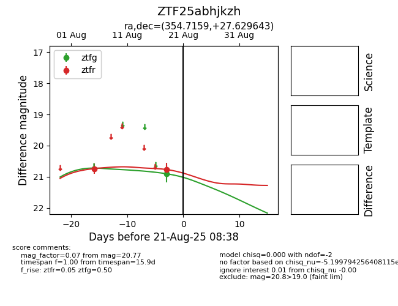

Target ZTF25abhjkzh at 2025-08-21 08:38, see:
FINK: fink-portal.org/ZTF25abhjkzh
Lasair: lasair-ztf.lsst.ac.uk/objects/ZTF25abhjkzh
ALeRCE: alerce.online/object/ZTF25abhjkzh
alt names
ZTF25abhjkzh (ztf,alerce)
coordinates:
equatorial (ra, dec) = (354.7159,+27.62964)
galactic (l, b) = (103.8300,-32.53589)
photometry
last ztfg=20.90, ztfr=20.77
1 ztfg, 2 ztfr detections
